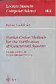

Patrice Godefroid
As of September 2006, I no longer works at
Bell Labs. My email address god@bell-labs.com is desactivated but you
can reach me using my old email address god AT montefiore.ulg.ac.be
I used to work in the
Computing Sciences Research lab (famous for the inventions of
Unix, C, etc.) at
Bell Laboratories,
Lucent Technologies.
My main area of research is program (mostly software)
specification, analysis, testing and verification.
My research interests include: verification and testing of
communication protocols, automatic analysis methods for reactive and
concurrent systems, model-checking algorithms, formal specification
languages, logics of programs, program analysis, design methodologies,
software engineering; methods for exploring and representing large
state spaces, search techniques in artificial intelligence; automatic
synthesis of reactive controllers, planning, control theory.
Here is a very brief bio. Below on
this page, you will find software,
my address, some fun stuff and a copyright notice for the papers below.
Some On-line Talks:
Some Professional Activities: Member of the program committee
for the conferences
- Upcoming: VMCAI'2007, LICS'2006, CAV'2006
- Past: VMCAI'2006, SPIN'2005
(PC chair), CAV'2005,
TACAS'2005,
ISSTA'2004, SPIN'2004, CONCUR'2003, TACAS'2003, ICSE'2003, SPIN'2003,
POPL'2002, TACAS'2002, FMICS'2002, CAV'2001, CAV'2000, FMSP'2000,
CAV'98, etc.
What's up? Here are papers describing some of the topics
I've been working on recently (in chronological order).
see my Publications by Themes
- Compositional Dynamic Test
Generation (Preliminary Version) Bell Labs Technical Memorandum
ITD-06-47049Q, July 2006.
- Software Partitioning
for Effective Automated Unit Testing (joint work with Arindam
Chakrabarti) To appear in the Proceedings of EMSOFT'2006 (6th Annual
ACM Conference on Embedded Software), Seoul, October 2006.
- Software Model
Checking: Searching for Computations in the Abstract or the
Concrete (joint work with Nils Klarlund) Invited paper.
Proceedings of IFM'2005 (Fifth International Conference on Integrated
Formal Methods), Eindhoven, November 2005. Lecture Notes in Computer
Science, vol. 3771, pages 20-32, Springer-Verlag. (Older IFM'2005
proceedings version written
in August 2005.)
- Analysis of Recursive
State Machines (joint work with Rajeev Alur, Michael Benedikt,
Kousha Etessami, Thomas Reps and Mihalis Yannakakis) ACM Transactions
on Programming Languages and Systems (TOPLAS), Volume 27, Number 4,
pages 786-818, July 2005, ACM Press. (Journal version of ICALP'2001
paper.)
- The Soundness of Bugs is
What Matters (Position Statement) Proceedings of BUGS'2005
(PLDI'2005 Workshop on the Evaluation of Software Defect Detection
Tools), Chicago, June 2005.
- DART: Directed Automated
Random Testing (joint work with Nils Klarlund and Koushik Sen)
Proceedings of PLDI'2005 (ACM SIGPLAN 2005 Conference on Programming
Language Design and Implementation), pages 213-223, Chicago, June
2005.
- Model Checking Vs.
Generalized Model Checking: Semantic Minimizations for Temporal Logics
(joint work with Michael Huth) Proceedings of LICS'2005 (20th
IEEE Symposium on Logic in Computer Science), pages 158-167, Chicago,
June 2005.
- Software Model Checking: The
VeriSoft Approach Formal Methods in System Design, Kluwer Academic
Publishers, volume 26, number 2, pages 77-101, March 2005. Also
available as Bell Labs Technical Memorandum ITD-03-44189G, March
2003.
- Dynamic Partial-Order
Reduction for Model Checking Software (joint work with Cormac
Flanagan) Proceedings of POPL'2005 (32nd ACM Symposium on Principles
of Programming Languages), pages 110-121, Long Beach, January
2005.
- Exploring Very Large
State Spaces Using Genetic Algorithms (joint work with Sarfraz
Khurshid) International Journal on Software Tools for Technology
Transfer (STTT), Volume 6, Number 2, pages 117-127, August 2004,
Springer-Verlag. (Journal version of TACAS'2002 paper.)
- Symmetry and Reduced
Symmetry in Model Checking (joint work with Prasad Sistla) ACM
Transactions on Programming Languages and Systems (TOPLAS), Volume 26,
Number 4, pages 702-734, July 2004, ACM Press. (Journal version of
CAV'2001 paper.)
- Three-Valued Abstractions
of Games: Uncertainty, but with Precision (joint work with Luca de
Alfaro and Radha Jagadeesan) Proceedings of LICS'2004
(19th IEEE Symposium on Logic in Computer Science), pages 170-179, Turku,
July 2004.
- Model Checking with
Multi-Valued Logics (joint work with Glenn Bruns) Proceedings of
ICALP'2004 (31st International Colloquium on Automata, Languages and
Programming), Turku, July 2004. Lecture Notes in Computer Science,
vol. 3142, pages 281-293, Springer-Verlag. (Previous version in Bell Labs
Technical Memorandum
ITD-03-44535H, May 2003.)
- Reasoning about Abstract
Open Systems with Generalized Module Checking Proceedings of
EMSOFT'2003 (3rd Conference on Embedded Software), Philadelphia,
October 2003. Lecture Notes in Computer Science, vol. 2855, pages
223-240, Springer-Verlag.
- On The Expressiveness of
3-Valued Models (joint work with Radha Jagadeesan) Proceedings of
VMCAI'2003 (4th Conference on Verification, Model Checking and
Abstract Interpretation), New York, January 2003. Lecture Notes in
Computer Science, vol. 2575, pages 206-222, Springer-Verlag.
- Automatic Abstraction Using
Generalized Model Checking (joint work with Radha Jagadeesan)
Proceedings of CAV'2002 (14th Conference on Computer Aided
Verification), Copenhagen, July 2002. Lecture Notes in Computer
Science, vol. 2404, pages 137-150, Springer-Verlag.
- VeriWeb: Automatically
Testing Dynamic Web Sites (joint work with Michael Benedikt and
Juliana Freire) Proceedings of WWW'2002 (11th International World Wide
Web Conference), Honolulu, May 2002.
- Software Model Checking in
Practice: An Industrial Case Study (joint work with Satish Chandra
and Chris Palm) Proceedings of ICSE'2002 (International Conference on
Software Engineering), pages 431-441, Orlando, May 2002.
- Exploring Very Large State
Spaces Using Genetic Algorithms (joint work with Sarfraz Khurshid)
Proceedings of TACAS'2002 (Tools and Algorithms for the Construction
and Analysis of Systems), Grenoble, April 2002.
- Abstraction-based Model
Checking using Modal Transition Systems (joint work with Michael
Huth and Radha Jagadeesan) Proceedings of CONCUR'2001 (12th
International Conference on Concurrency Theory), Aalborg, August
2001. Lecture Notes in Computer Science, vol. 2154, pages 426-440,
Springer-Verlag.
- Symmetry and Reduced
Symmetry in Model Checking (joint work with Prasad Sistla)
Proceedings of CAV'2001 (13th Conference on Computer Aided
Verification), Paris, July 2001. Lecture Notes in Computer Science,
vol. 2102, pages 91-103, Springer-Verlag.
- Model Checking of
Unrestricted Hierarchical State Machines (joint work with Michael
Benedikt and Tom Reps) Proceedings of ICALP'2001 (28th International
Colloquium on Automata, Languages and Programming), Crete, Greece,
July 2001. Lecture Notes in Computer Science, vol. 2076, pages
652-666, Springer-Verlag.
- Temporal Logic Query
Checking (joint work with Glenn Bruns) Proceedings of LICS'2001
(16th IEEE Symposium on Logic in Computer Science), pages 409-417,
Boston, June 2001.
- Ensuring Privacy in
Presence Awareness Systems: An Automated Verification Approach
(joint work with Jim Herbsleb, Lalita Jagadeesan, and Du Li)
Proceedings of CSCW'2000 (ACM 2000 Conference on Computer Supported
Cooperative Work), Philadelphia, December 2000.
- Automated Systematic Testing
for Constraint-Based Interactive Services (joint work with Lalita
Jagadeesan, Radha Jagadeesan and Konstantin Laufer) Proceedings of
FSE'2000 (8th International Symposium on the Foundations of Software
Engineering), pages 40-49, San Diego, November 2000.
- Generalized Model
Checking: Reasoning about Partial State Spaces (joint work with
Glenn Bruns) Proceedings of CONCUR'2000 (11th International Conference
on Concurrency Theory), University Park, August 2000. Lecture Notes in
Computer Science, vol. 1877, pages 168-182, Springer-Verlag.
- In the fall of 1999, I have given a course entitled Design and Analysis of Communication
Software at Stanford University, in collaboration with David
L. Dill.
- Exploiting Symmetry when
Model-Checking Software Proceedings of FORTE/PSTV'99 (Formal
Methods for Protocol Engineering and Distributed Systems), pages
257-275, Beijing, October 1999.
- Model Checking Partial State Spaces
with 3-Valued Temporal Logics (joint work with Glenn Bruns)
Proceedings of CAV'99 (11th Conference on Computer Aided Verification),
Trento, July 1999. Lecture Notes in Computer Science, vol. 1633, pages
274-287, Springer-Verlag.
- Automatically Closing Open Reactive
Programs (joint work with Christopher Colby and Lalita Jagadeesan)
Proceedings of PLDI'98 (1998 ACM SIGPLAN Conference on Programming Language
Design and Implementation), pages 345-357, Montreal, June 1998.
- Systematic Software Testing using
VeriSoft: An Analysis of the 4ESS Heart-Beat Monitor (joint work
with Bob Hanmer and Lalita Jagadeesan) Bell Labs Technical Journal,
Volume 3, Number 2, April-June 1998.
- Model Checking Without a Model:
An Analysis of the Heart-Beat Monitor of a Telephone Switch using
VeriSoft (joint work with Bob Hanmer and Lalita Jagadeesan)
Proceedings of ISSTA'98 (1998 ACM SIGSOFT International Symposium on
Software Testing and Analysis), pages 124-133, Clearwater Beach, March
1998.
- The Power of QDDs (joint
work with Bernard Boigelot, Bernard Willems and Pierre Wolper)
Proceedings of SAS'97 (Fourth International Static Analysis Symposium),
Paris, September 1997. Lecture Notes in Computer Science, vol. 1302,
pages 172-186, Springer-Verlag.
- VeriSoft: A Tool for the Automatic
Analysis of Concurrent Reactive Software (short paper) Proceedings
of CAV'97 (9th Conference on Computer Aided Verification), Haifa, June
1997. Lecture Notes in Computer Science, vol. 1254, pages 476-479,
Springer-Verlag.
- Automatic Synthesis of
Specifications from the Dynamic Observation of Reactive Programs
(joint work with Bernard Boigelot) Proceedings of TACAS'97 (Third
International Workshop on Tools and Algorithms for the Construction
and Analysis of Systems), Twente, April 1997. Lecture Notes in
Computer Science, vol. 1217, pages 321-333, Springer-Verlag.
- Model Checking for
Programming Languages using VeriSoft Proceedings of POPL'97 (24th ACM
Symposium on Principles of Programming Languages), pages 174-186,
Paris, January 1997.
- On the Costs and Benefits of
using Partial-Order Methods for the Verification of Concurrent Systems
(Invited Paper) Proceedings of DIMACS Workshop on Partial-Order
Methods in Verification, AMS, Princeton, July 1996.
- Symbolic Protocol
Verification with Queue BDDs (joint work with David Long)
Formal Methods in System Design, Kluwer Academic Publishers, volume
14, number 3, pages 257-271, May 1999. Preliminary version in
Proceedings of LICS'96 (11th IEEE Symposium on Logic in Computer Science),
pages 198-206, New Brunswick, July 1996.
- Symbolic Verification of
Communication Protocols with Infinite State Spaces using QDDs
(joint work with Bernard Boigelot) Formal Methods in System Design,
Kluwer Academic Publishers, volume 14, number 3, pages 237-255, May
1999. Preliminary version in Proceedings of CAV'96 (8th Conference on
Computer Aided Verification), New Brunswick, August 1996. Lecture
Notes in Computer Science, vol. 1102, pages 1-12, Springer-Verlag.
- Using Partial-Order
Methods in the Formal Validation of Industrial Concurrent Programs
(joint work with Doron Peled and Mark Staskauskas) IEEE
Transactions on Software Engineering, volume 22, number 7, pages
496-507, July 1996. Preliminary version in Proceedings of ISSTA'96
(1996 ACM SIGSOFT International Symposium on Software Testing and
Analysis), pages 261-269, San Diego, January 1996.
- Model Checking in
Practice: An Analysis of the ACCESS.bus Protocol using SPIN
(joint work with Bernard Boigelot) Proceedings of FME'96 (Formal
Methods Europe'96), Oxford, March 1996. Lecture Notes in Computer
Science, vol. 1051, pages 465-478, Springer-Verlag.
- A revised version of my PhD thesis,
"Partial-Order Methods for the Verification of Concurrent Systems --
An Approach to the State-Explosion Problem", is published by
Springer-Verlag, as volume 1032 of Lecture Notes in Computer Science,
January 1996. (ISBN 3-540-60761-7)

- The ULg
Partial-Order Package for SPIN (short paper) Presented at the
first SPIN workshop, Montreal, October 1995. This short document
presents an overview of the Partial-Order Package for SPIN developed
at the University of Liege (ULg) in 1992 -- 1994, by Didier Pirottin
and me, under the supervision of Pierre Wolper, and with the
collaboration of Gerard Holzmann.
- State-Space Caching
Revisited (joint work with Gerard Holzmann and Didier Pirottin)
Formal Methods in System Design, Kluwer Academic Publishers, volume 7,
number 3, pages 1-15, November 1995. (Journal version of CAV'92
paper.)
- On the Verification of
Temporal Properties (joint work with Gerard Holzmann) Proceedings
of PSTV'93 (13th IFIP WG 6.1 International Symposium on Protocol
Specification, Testing, and Verification), pages 109-124, Liege, May
1993. North-Holland.
Previous Publications (1990-1994)
Copyright Notice: The above material is
presented to ensure timely dissemination of scholarly and technical
work. Copyright and all rights therein are retained by authors or by
other copyright holders. All persons copying this information are
expected to adhere to the terms and constraints invoked by each
author's copyright. In most cases, these works may not be reposted
without the explicit permission of the copyright holder.
Software:
Address:
- Bell Laboratories
- Lucent Technologies
- Room 9G-537
- 2701 Lucent Lane
- Lisle, IL 60532, U.S.A.
Email: god@bell-labs.com

Fun
god@bell-labs.com
Copyright ©Lucent Technologies 1996-2006. All rights
reserved.


{kind=link}